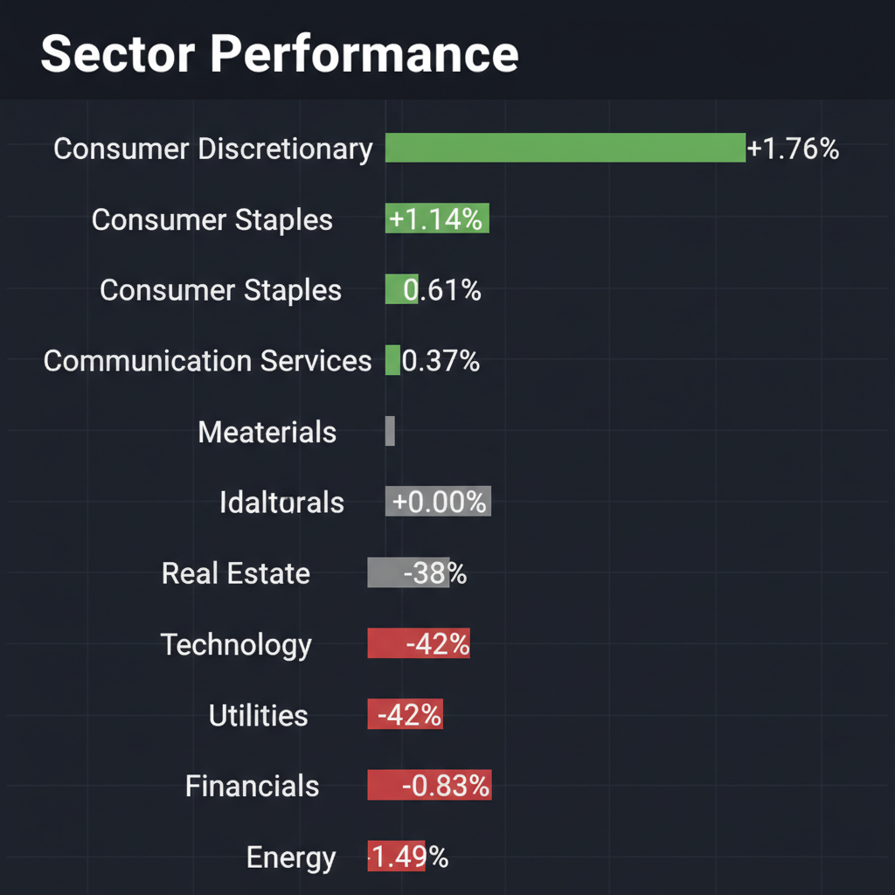
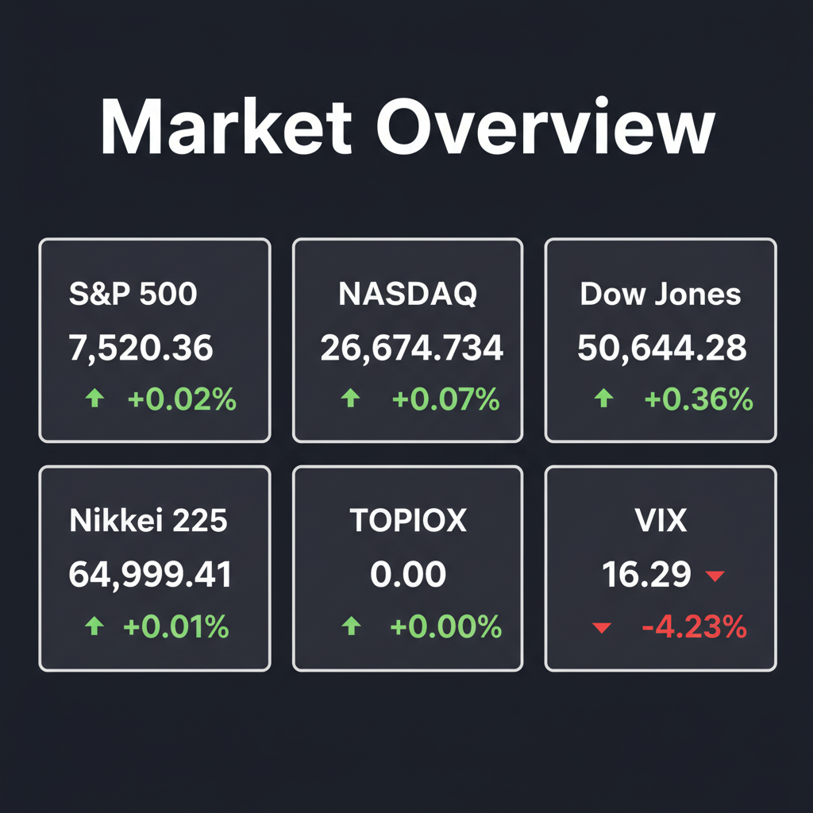

投資チームミーティングの議長として、各エージェントの専門的な分析と最新のWeb調査結果を統合し、投資家向けの最終レポートを作成しました。
本レポートでは、テーブル（表）を使用せず、すべて箇条書きリスト形式で整理しています。また、個別銘柄の強気・中立・弱気の分類は、提供されたエージェント合議スコア（10段階評価の平均値）に厳密に基づいています。
各エージェントがWeb調査結果を踏まえて独立に10段階評価した結果です。平均7以上=強気、4〜6.9=中立、4未満=弱気。
| 銘柄 | ファンダメンタルズアナリスト | テンバガーハンター | マクロエコノミスト | テクニカルストラテジスト | リスクマネージャー | 平均 | 判定 |
| ERII | 8 省エネ義務化の国策追い風に業績急拡大、財務も極めて強固 | 10 液冷と超高圧流体技術でAIの物理的ボトルネックを破壊する | 8 省エネ義務化の国策追い風に業績急拡大続く | 5 好業績だが株価は調整局面、下値支持線を模索 | 3 日米銘柄の混同リスクと急激な特需後の剥落懸念 |
6.8 | 中立 |
| MYRG | 6 業績爆発的も株価急騰でPER高騰、安全マージン欠如 | 9 データセンターと送電網近代化の爆発的需要で驚異的成長 | 7 送電網需要は強力だが株価急騰で割高感あり | 6 高値ブレイク目前だが、短期急騰による過熱感が強い | 4 PERがバブル水準で固定価格の利益圧迫リスクあり |
6.4 | 中立 |
| 6363.T | 5 今期15%減益計画で下落トレンド、押し目を確認したい | 7 今期減益もデータセンター冷却と水インフラの需要は不変 | 5 水インフラ需要は有望も今期減益予想で調整 | 3 今期減益予想でチャートは下落トレンド継続中 | 3 今期大幅減益予想と買収によるのれん減損リスク |
4.6 | 中立 |
| ANF | 4 地政学リスクで欧州減収、消費減速に伴う目標株価引き下げ | 4 地政学リスクによる減速が顕在化し破壊的成長は期待薄 | 4 地政学リスクによる欧州売上減と消費減速が懸念 | 4 決算好悪交錯も中期的下降トレンドで上値が重い | 3 地政学リスクによる欧州減収と消費減速の直撃 |
3.8 | 弱気 |
| 3070.T | 2 営業赤字継続と多角化リスク、投機的な株主還元は警戒 | 3 赤字継続と無理な多角化で本物のイノベーションとは程遠い | 1 業績赤字継続と過度な多角化で財務リスク高 | 2 赤字継続の仕手株、出来高細り下落トレンド | 1 営業赤字が継続し異常な優待による仕手化の危険大 |
1.8 | 弱気 |
エージェントが推奨した中小型株について、Google検索で最新情報を調査した結果です。
MYRグループ（NASDAQ: MYRG）の投資判断に必要な最新情報を以下に簡潔にまとめます。
1. 企業概要 MYRグループは、米国とカナダで電力インフラ、商業、産業建設市場向けに専門的な電気工事サービスを提供する持株会社です。事業は送電・配電（T&D）と商業・産業（C&I）の2つのセグメントで構成され、設計、調達、施工、改修、保守・修理といった幅広い電気工事サービスを提供しています。 現在の時価総額は、2026年5月時点で約69.5億ドルから73.1億ドルの範囲です。同社は電力インフラ向け電気工事サービスの大手と位置づけられており、特にAIデータセンター建設や送電網の近代化といった分野からの需要増加の恩恵を受けています。主な競合にはQuanta Services (PWR)などが挙げられます。
2. 直近の業績・決算情報 MYRグループは2026年4月28日（または29日）に2026年第1四半期決算を発表し、アナリスト予想を大幅に上回る好調な結果となりました。
* 売上高: 第1四半期の売上高は10億ドルで、前年同期比20%増加しました。これはアナリスト予想の9億3,245万ドルを上回りました。過去12ヶ月間の売上高は約38.2億ドルです。 * 純利益・EPS: 第1四半期の純利益は過去最高の4,680万ドル、希薄化後EPSは2.99ドルを記録し、前年同期比106%増となりました。これはアナリスト予想の2.06ドルを45.15%上回る大幅な増益です。 * 成長率: 第1四半期の売上高成長率は前年同期比20%です。過去12ヶ月間のEPS成長率は318.8%に達しています。 * その他: 受注残高は過去最高の28.4億ドル（前年同期比7.7%増）に達し、将来の収益に対する強い見通しを示しています。粗利益率は13.4%に拡大し、EBITDAも過去最高の8,150万ドルとなりました。経営陣は通期売上高成長率ガイダンスを約12%に引き上げ、営業利益率目標も上方修正しています。
3. 最新ニュース・材料（直近1-2週間） 直近の最も重要な材料は、2026年4月下旬に発表された2026年第1四半期決算の好調な内容です。この決算発表を受けて、MYRグループの株価は大きく上昇しました。 最近の報道では、MYRグループが電力網の近代化、データセンター、およびリショアリング需要に支えられた記録的な売上高、利益、および大規模な受注残高を報告し、堅調なバランスシートと継続的な自社株買いが強調されています。Simply Wall Streetは5月23日に、MYRグループの強力なEPS成長、フリーキャッシュフローの増加、および自社株買い後のバリュエーションについて評価する記事を公開しています。また、5月20日には、送電網および再生可能エネルギープロジェクトにおける力強い成長を受けてMYRグループの株価が最高値を更新したことが報じられました。
4. アナリスト評価・目標株価 アナリスト8名による12ヶ月の平均目標株価は、情報源によって$358.17（現在の株価から約24.06%の下落を示唆） から$489.17（現在の株価から約9.46%の上昇を示唆） まで幅があります。最高目標株価は$564.00、最低目標株価は$202.00から$296.00となっています。 アナリストのコンセンサスレーティングは「Moderate Buy」または「Buy」であり、8名のアナリストのうち、3名がホールド、3名がバイ、2名がストロングバイと評価しています。
5. リスク要因 * 競合: 電力インフラおよび建設市場には、Quanta Services (PWR)、MasTec (MTZ)などの有力な競合他社が存在します。 * 財務上の懸念: * 一部のアナリストは、PERが約41倍から61倍と高く、バリュエーションに懸念があることを指摘しています。 * 人件費上昇の可能性が利益率を圧迫するリスクがあります。 * C&Iセグメントにおける固定価格契約の増加は、将来の利益率に予期せぬ影響を与える可能性があります。 * 大規模かつ複雑なプロジェクトへの受注残高の集中は、特定の需要変動に対して脆弱性をもたらす可能性があります。 * 成長を維持するための販売管理費（SG&A）や設備投資の増加が、売上成長が鈍化した場合に利益率を圧迫する懸念も挙げられています。 * 一方で、Simply Wall Streetは財務健全性スコアを6/6と評価し、低負債と良好な金利カバー率を指摘しており、財務基盤は強固であるとしています。
6. 株価の最近の動き MYRグループの株価は、2026年第1四半期決算の好調な発表後、大幅に上昇しました。決算発表の翌日には19.9%上昇して404.81ドルで取引を終え、その後もさらに8.4%上昇しています。 現在の株価は、2026年5月27日時点で470ドル前後で推移しています。52週高値は480.00ドル、52週安値は154.62ドルです。過去1年間で株価は188.8%上昇しており、年初来では100.39%の上昇、直近30日間でも51.59%の上昇と、強い上昇トレンドにあります。短期および長期の移動平均線も買いシグナルを示し、「ゴールデンクロス」を形成していることから、上昇モメンタムが継続していると見られています。
株式会社ジェリービーンズグループ（3070.T）に関する投資判断に必要な最新情報を以下の通りまとめました。
株式会社ジェリービーンズグループは、主に婦人靴のEC販売、小売販売、卸、OEM生産を手掛ける企業です。旧商号は株式会社アマガサで、2024年に現商号に変更しました。主力ブランドはエレガントブランド「JELLY BEANS」です。販売は自社ECオンラインショップが中心であり、実店舗は3店舗に縮小しています（2026年1月時点）。 近年は事業の多角化を進めており、2025年には韓国のGold Star社（アイスクリーム）を子会社化しスポーツアパレル事業を開始、フォーシーズHDやCOPUS JAPAN（韓流コンテンツ）との業務提携も行っています。また、2026年4月には子会社のJBBLOCKが独自のマルチモーダルAI技術で開発したAI音楽制作サービスを開始したことも報じられています。 時価総額は2026年5月27日時点で7,150百万円です。業種は東証グロース市場の「卸売業」に分類されます。
次回の決算発表は2026年6月11日の予定です。 2026年3月12日発表の決算短信要約によると、売上高は前期比331.8％増の35.91億円と大幅に伸長しました。営業損失は5,900万円と赤字幅が縮小しています。過去12四半期では業績が改善傾向にあり、純利益率のマイナス幅が縮小し、売上高も拡大が続いています。 なお、2025年1月期連結決算では、売上高8億31百万円（前期比9.6％減）、営業損失5億19百万円、経常損失5億32百万円、親会社株主に帰属する当期純損失5億19百万円を計上しており、厳しい状況が続いていました。
直近1〜2週間の主なニュースは以下の通りです。 * 2026年5月26日：JELLY BEANS「フェミニン特集」の公開。 * 2026年5月22日：固定資産（営業権）の取得を発表し、同日補足資料も開示されました。Yahoo!ファイナンスのAI値動き解説では、この適時開示後も株価の戻りが鈍いと指摘されています。 * 2026年5月15日：JELLY BEANS 公式オンラインストアのリニューアル。 * 2026年5月14日：JELLY BEANS STYLEがRIZIN.53 神戸大会に出展。 * 2026年5月12日：日本第2号店となる「361° SPORTS ららぽーと名古屋みなとアクルス店」をオープン。
現在、大手投資銀行によるアナリスト評価や目標株価は確認できません。株予報Proでは、アナリストの業績予想コンセンサスや統計的アプローチによる理論株価、想定株価レンジが提供されていますが、具体的な目標株価の記載はありませんでした。
* M&A関連費用: M&Aを継続する方針のため、取得関連費用など一過性の販管費が大きく、利益や資金繰りが振れやすくなる可能性があります。 * 競合: 婦人靴市場はトレンドの変化が早く、競争が激しい業界です。 * 財務上の懸念: 過去の決算では営業損失や純損失を計上しており、財務状況には注意が必要です。自己資本比率は2026年5月27日時点で71.4%です。
株価は2026年5月20日の87円から5月26日には82円と、5日間で-5.7%下落しました。5月22日の適時開示後も戻りが鈍い推移となっています。 2026年5月27日時点の終値は86円で、前日比+4円（+4.88%）でした。 直近1週間のYahoo!ファイナンス掲示板におけるユーザーの評価では、「強く買いたい」が72.88%、「買いたい」が15.25%と、買い意欲が強い傾向が見られます。 年初来高値は2026年1月27日の145円、年初来安値は2026年1月5日の74円です。
ERIIの銘柄について、投資判断に必要な最新情報を以下の通りまとめました。ここでいうERIIは、上場企業であるERIホールディングス株式会社（証券コード：6083）を指します。
時価総額: 2026年5月27日時点で309.77億円（Yahoo!ファイナンス）または313億円（松井証券、株予報Pro）です。
業界でのポジション: 建築確認検査業務の全国展開で首位、業界最大手です。
アバクロンビー＆フィッチ・カンパニー（ANF）の投資判断に必要な最新情報は以下の通りです。
ANF（アバクロンビー＆フィッチ・カンパニー）に関する最新情報
1. 企業概要 アバクロンビー＆フィッチ・カンパニーは、メンズ、ウィメンズ、キッズ向けのアパレル、パーソナルケア製品、アクセサリーを提供する世界的なデジタル主導のオムニチャネル小売企業です。主要ブランドには、「Abercrombie & Fitch」、「abercrombie kids」、「Hollister」、「Gilly Hicks」、「Social Tourist」、「Your Personal Best (YPB)」などがあります。主にデジタルチャネルと自社所有の店舗を通じて販売しており、北米、欧州、アジアで事業を展開しています。
業界でのポジションとしては、景気連動型消費財セクターの特産物小売業に分類されます。強力で認知度の高い複数のブランドを保有し、実店舗とデジタル販売を組み合わせた優れたオムニチャネル体制、および機敏な在庫管理による流行への迅速な対応力が強みとされています。従業員数は24,900人（2026年3月時点）と報告されています。
2. 直近の業績・決算情報 同社は2026年5月27日（水）に2026年度第1四半期（Q1 2026）決算を発表しました。 * 売上高: 11億ドルで、市場予想の11.2億ドルをわずかに下回りました。しかし、前年同期比で2%増を達成し、14四半期連続の成長を記録しています。 * 1株当たり利益 (EPS): 調整後1.47ドルで、アナリスト予想の1.29ドルを上回る好調な結果となりました。 * 営業利益率: 8.0%でした。 * 地域別売上: 南北アメリカの純売上高は3%増、アジア太平洋地域（APAC）は24%増と好調でしたが、欧州・中東・アフリカ地域（EMEA）は10%減となりました。 * ブランド別売上: Abercrombieブランドは3%増、Hollisterブランドは前年並みでした。 * 通期見通し: 2026年度の純売上高成長率は3%〜5%、1株当たり利益は10.20ドル〜11.00ドルと据え置いています。
3. 最新ニュース・材料（直近1-2週間） 2026年5月27日のQ1決算発表は、EPSが市場予想を上回ったことで、株価は時間外取引で5.3%上昇し、市場前取引では11.65%上昇しました。これは、売上高はわずかに予想を下回ったものの、収益性を維持する同社の能力に対する投資家の信頼を反映しています。
一方で、ウォール街のアナリストは目標株価を引き下げる動きも見せています。Raymond Jamesは目標株価を110ドルから92ドルに引き下げたものの、「Outperform」の評価を維持しました。JPMorganも目標株価を110ドルから107ドルに引き下げ、「Neutral」の評価を維持しています。Hollisterブランドのトレンド軟化、客足の鈍化、プロモーションの強化、欧州アパレル需要の軟化などが、今後の予測に影響を与える要因として挙げられています。また、ガソリン価格の上昇による消費者の価値志向の高まりもHollisterブランドにとって逆風となる可能性があります。
4. アナリスト評価・目標株価 アナリストの平均評価は「買い」（Buy）であり、コンセンサス評価は「Moderate Buy」（中程度の買い）です。アナリストの66.67%が「強気」、22.22%が「中立」、11.11%が「弱気」と評価しています。具体的な平均目標株価は明確に示されていませんが、Investing.comによると、アナリスト目標株価に対するアップサイドは47.1%とされています。
5. リスク要因 主なリスク要因は以下の通りです。 * 激しい競争と流行の変化: アパレル業界特有の激しい競争と流行の変化により、需要予測が難しい点が挙げられます。 * サプライチェーンの依存性: 商品の生産を外部工場に依存しているため、供給網の混乱が業績に影響を及ぼす可能性があります。 * コスト変動と為替リスク: 関税引き上げ、原材料価格の変動、および世界各地での事業展開による為替変動が収益に影響を与えるリスクがあります。 * 地政学的リスク: EMEA地域における地政学的緊張が売上高に影響を与えています。 * 消費者需要の変動: 主要市場における消費者需要の変動もリスク要因です。
6. 株価の最近の動き ANFの株価は、2026年5月27日のQ1決算発表後、一時的に11.65%上昇しました。時間外取引では5.3%上昇し、78.74ドルを付けました。 直近のトレンドとしては、過去3ヶ月で約15%下落しており、年初来では30%以上の下落を記録しています（5月27日の上昇分は含まれていない可能性あり）。しかし、過去1年間では約10%の上昇、過去5年間では約90%の上昇と、長期的に見れば堅調な推移を見せています。2026年5月26日時点の株価は74.78ドルで、52週高値は133.11ドル、52週安値は65.45ドルです。現在の株価は52週高値から約78%低い水準にあります。